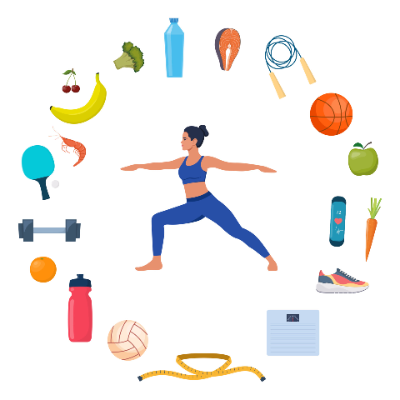
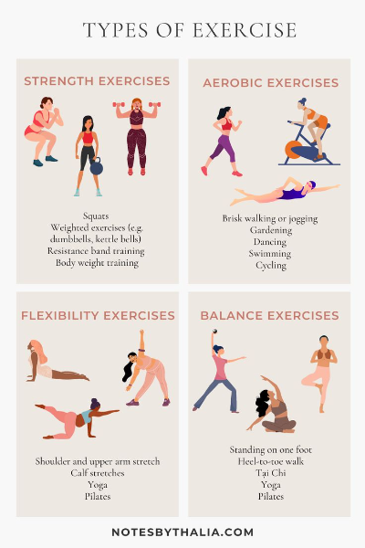

Regular exercise is one of the most imortant habits for college students to maintain both physical and mental health. Exercising can help reduce stress, improve focus, and boost energy levels throughout the day. Different types of exercise, such as strength training, areobic,and flexibilty, provide unique benefits. Making time for physical activity can overall improve well-being and academic performance.

college life often involves long hours of studying, sitting in lectures, and balancing personal responsibilities. Developing a consistent exercise routine can help counteract the negative effects of a sedentary lifestyle. Simple activities like walking, jogging, or yoga can make a significant difference. Staying active not only enhances physical health but also promotes better sleep patterns and mood regulation.

| Exercise Type | Benefits |
|---|---|
| Weight Strength Training | Builds muscle mass, increases metabolism, improves bone density |
| Cardio | Enhances cardiovascular health, boosts endurance, aids in weight management |
| Yoga | Improves flexibility, reduces stress, enhances mental clarity |